Local Threads Collective
After living in Sweden for three years and being part of a welcoming community in a foreign land, when I moved back to Mumbai and found myself in an old place without familiar faces, I realized how truly deprived most of us are of spaces to simply exist together. That experience sparked my drive to help design environments that foster belonging. I learned quickly that design is inherently social. It is never just about creating for people, but co-creating with them. Hence, community collaboration is where my passion for design, my love for art, my need for documenting, and my appreciation for people come together to build something beautiful and long lasting.
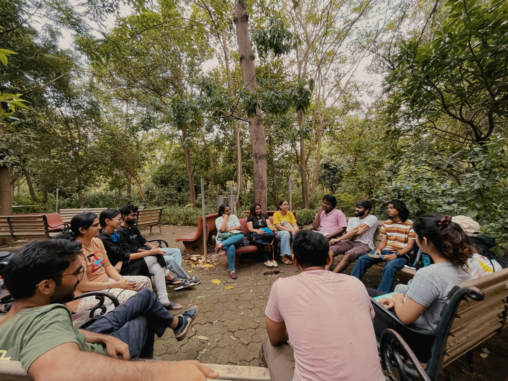
Urban Loneliness
Mumbai operates on an endless, exhausting cycle of perform, produce, and present. We are constantly surrounded by millions of people, yet finding a space where you can simply be, without an agenda, an outcome, or a transaction is incredibly rare. That constant hustle naturally breeds a specific kind of urban loneliness that I felt when I was back. I could know the streets, the rhythm, and the language of the city perfectly, but still feel completely isolated because the environment rarely permitted me to slow down and truly see others.
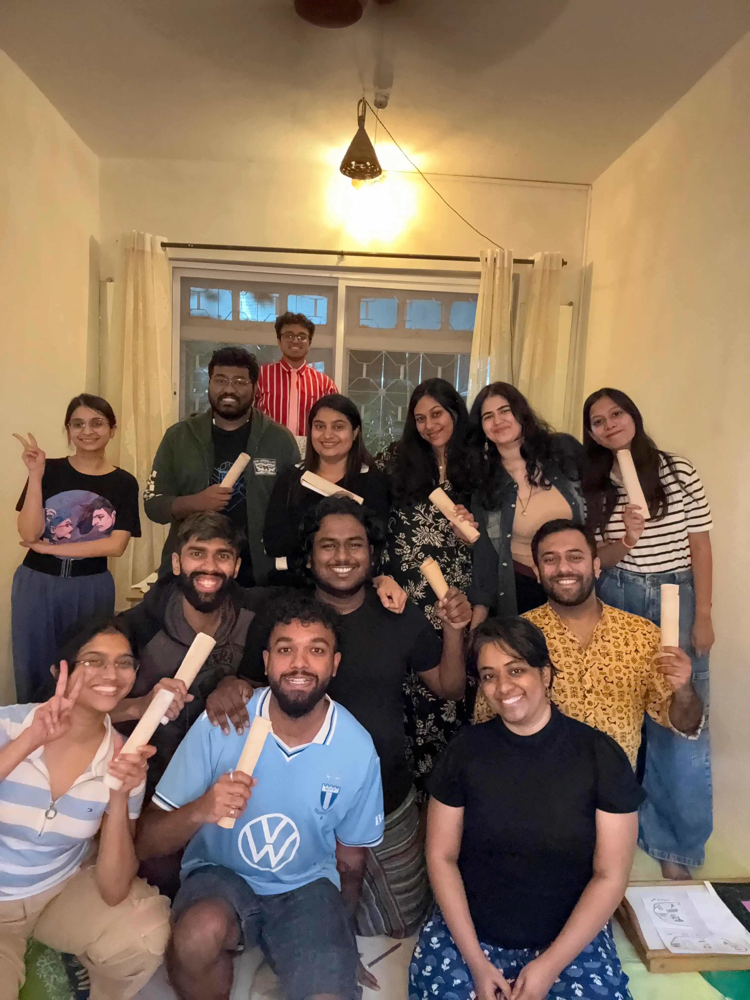
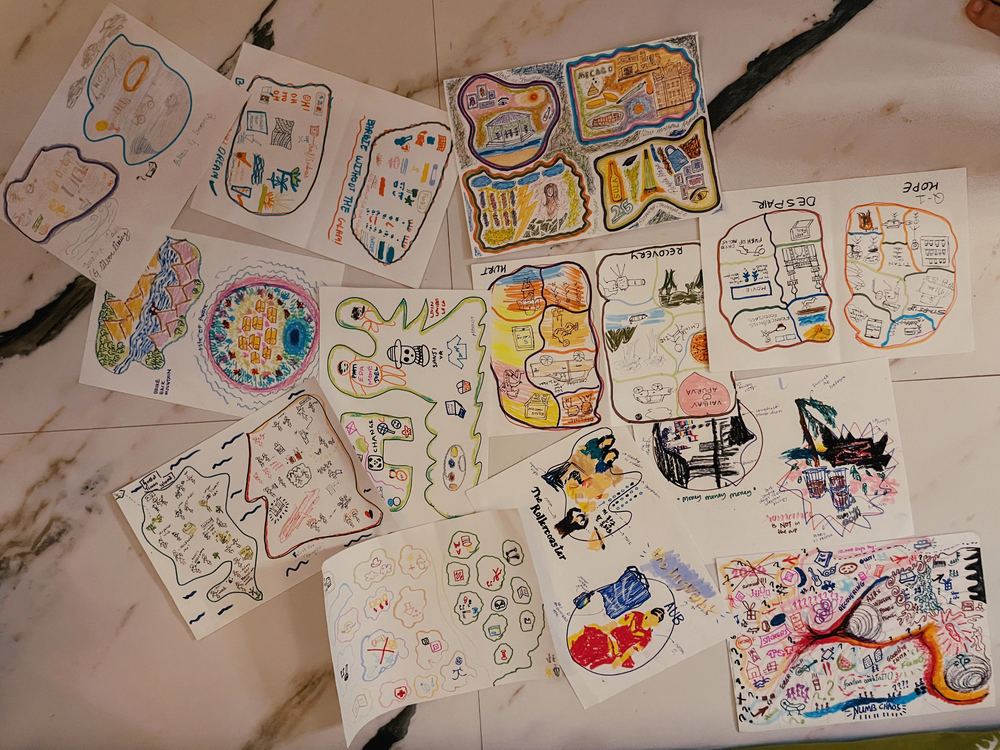
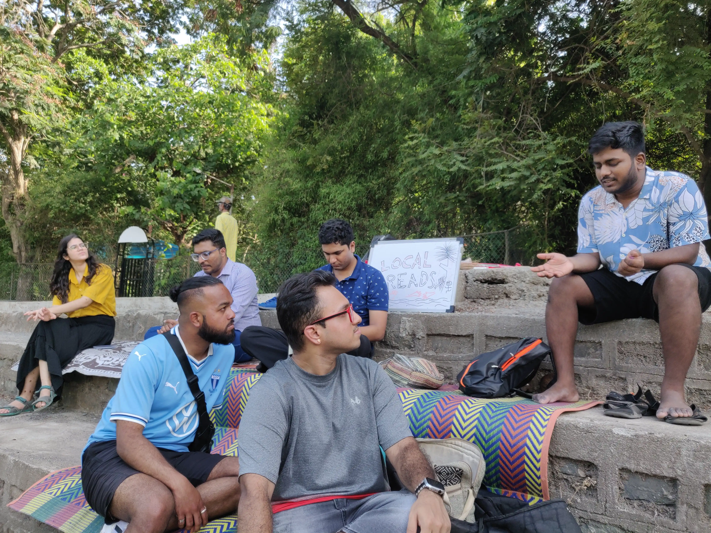
Why Threads
Local Threads Collective was born as a gentle resistance to that very isolation. It is not an escape from Mumbai, but rather a deliberate attempt to carve out something the city often forgets to be. We wanted to stitch together a shared tapestry of people from the suburbs who might otherwise never cross paths. It’s about replacing the pressure to be productive, with a profound permission to just be present, where genuine empathy and leisure take priority over hustle.
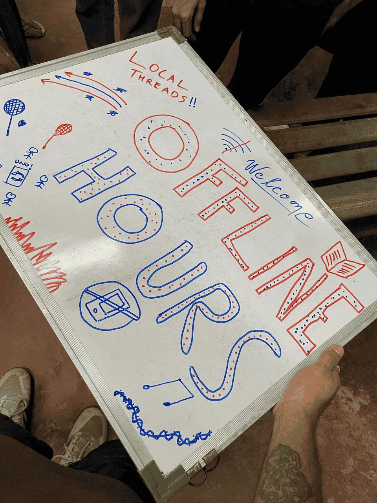
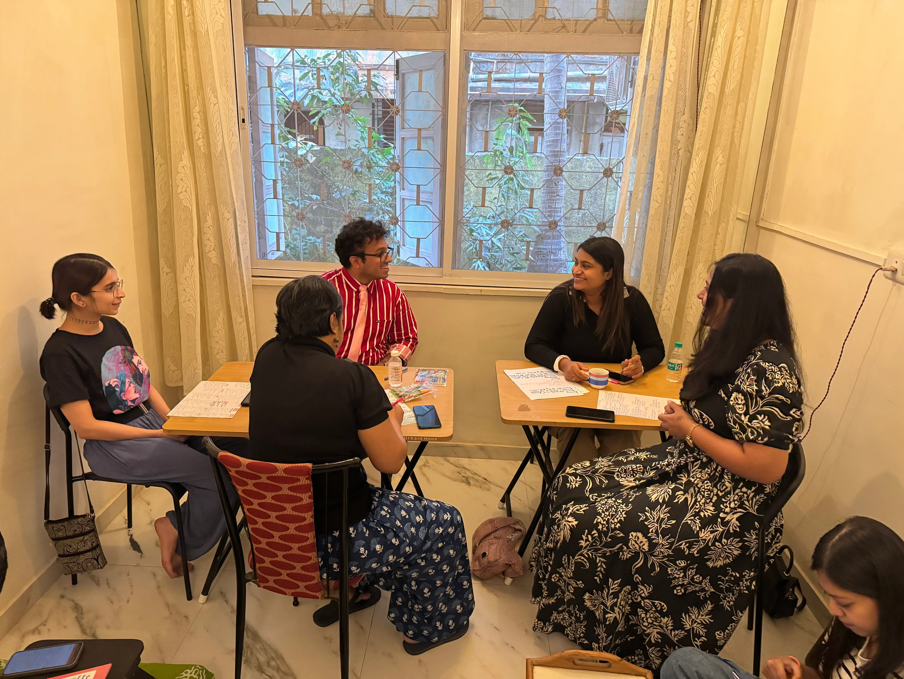
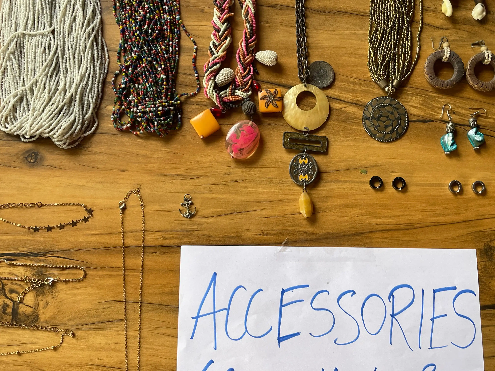
Our Gatherings
To build this, we host a variety of intimate gatherings designed to strip away the noise. Our Offline Hours in public gardens are dedicated times to put away digital devices and reclaim true leisure together. We run Clothes Swap Meets where exchanging items is really just an excuse to share stories, banter, and laughter. Alongside these, we hold music listening sessions, picnics in the national park, and events with local facilitators, with each one serving as an anchor for people to reconnect with themselves and their neighbors.
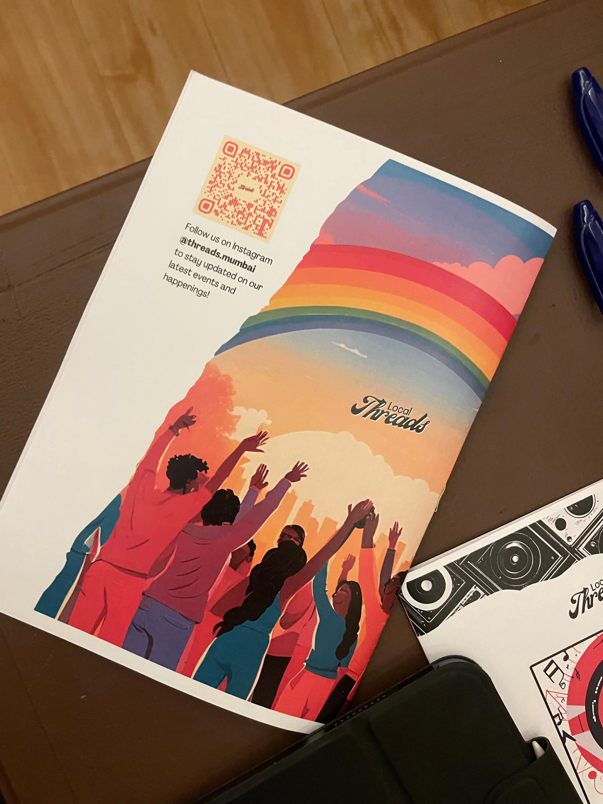
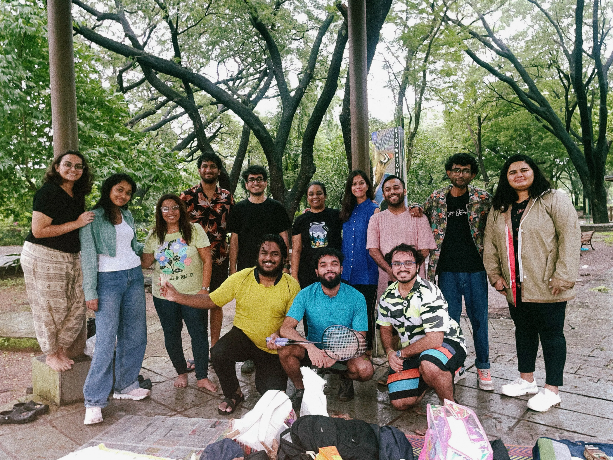
What we want to Build
As the community grows, we are actively reimagining how we organize ourselves. We do not want our collective to be governed by traditional hierarchies. Currently, we operate with a core team and a network of volunteers, but our vision is to transition into a fully decentralized structure. We want to move toward a model where there is no top-down leadership, instead just autonomous, gathering-based teams running their own events, supported by an admin and design hub that helps weave all the different initiatives together.
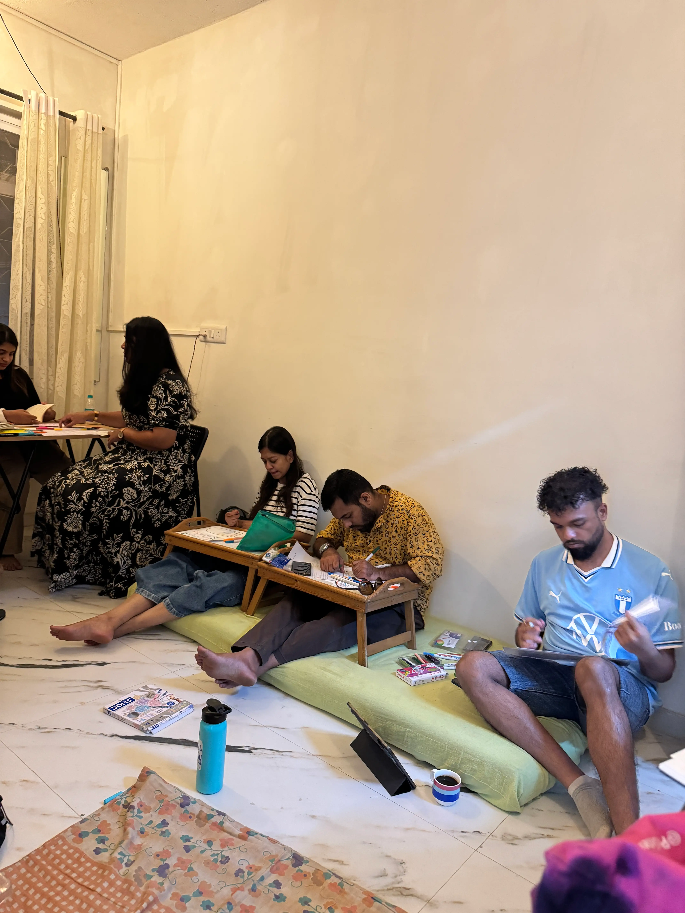
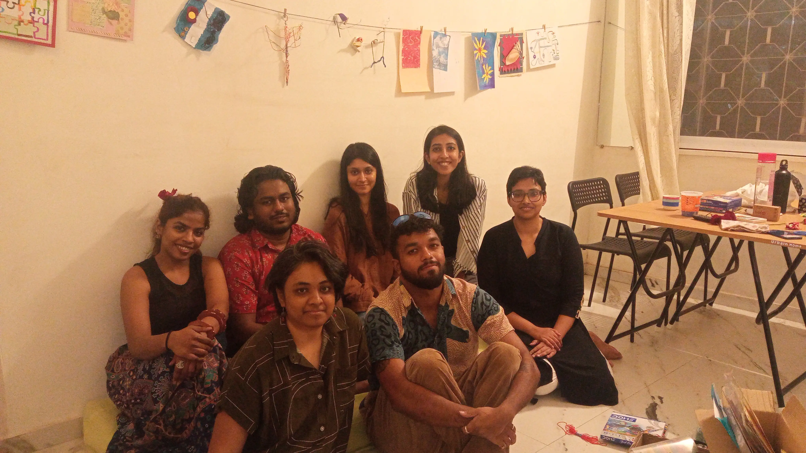
Living Threads
Ultimately, the goal of Local Threads Collective isn't to scale into a massive, faceless organization, but to remain a deeply intentional, living network. By empowering smaller teams and focusing on human-scale interactions, we hope to build an enduring blueprint for urban communities. It is a slow, careful work of empathy and shared space, proving that even in a city as relentless as Mumbai, we can still design environments that don't just ask us to survive, but actively invite us to breathe.
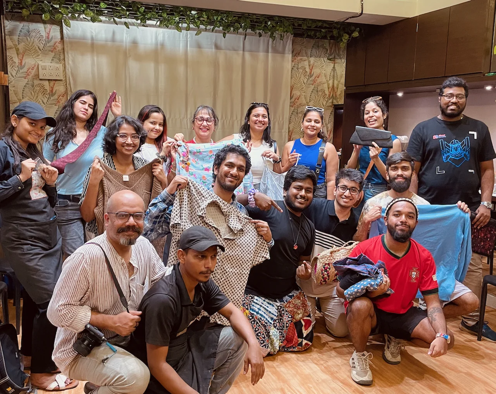